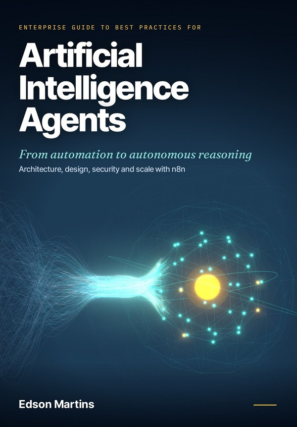
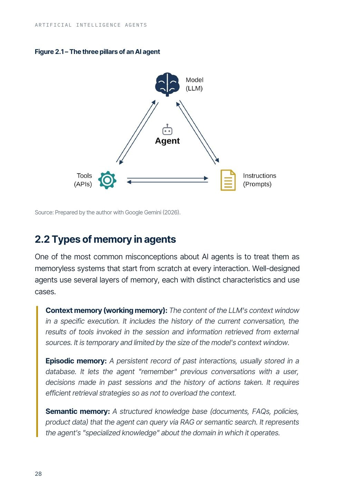
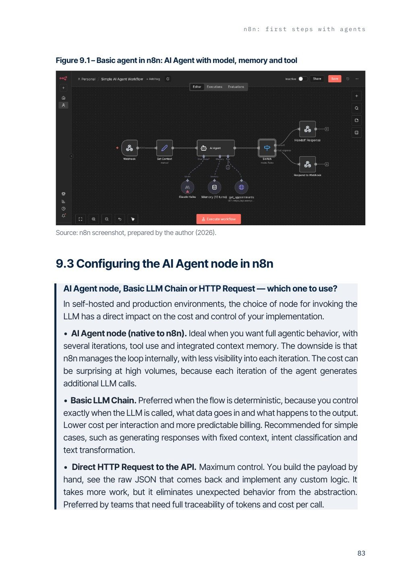

The enterprise guide to designing, securing and operating AI agents that survive production, with ready-to-use n8n workflows.

When the API goes down, a customer asks for something off-script, personal data almost leaks and a token bill nobody planned for arrives, the prototype stops being enough. Most teams find out too late which decisions they should have made on day one.
Start with the simplest design that meets the use case and add complexity only when simplicity shows its limits.
Anticipate tool failures, unexpected model responses and malformed inputs from the very first version.
Security, privacy and human oversight come in from the first line of the design, not after the first incident.


Not for you if you are looking for a no-code shortcut or a tool tutorial with no architecture behind it.
Twelve yes-or-no questions to find out whether your agent is built to last, or whether the countdown has already started.
PDF, ready to read on any device, plus the n8n workflows as JSON files to import.
No. Chapters 1 to 8 and 11 to 20 apply to any platform. Chapters 9 and 10 show the implementation in n8n step by step.
The architecture, security and operations practices apply anywhere. The privacy chapter uses Brazil's LGPD as the worked example, and the LGPD follows the same logic as the GDPR.
Access is immediate after payment confirmation, through the Hotmart members area.
Yes. You have 7 days to request a full refund through Hotmart, no questions asked.
Yes. The n8n workflows are also on GitHub, free. The book explains the decisions behind each one, which is what makes them safe to adapt.